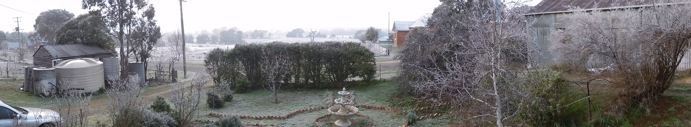
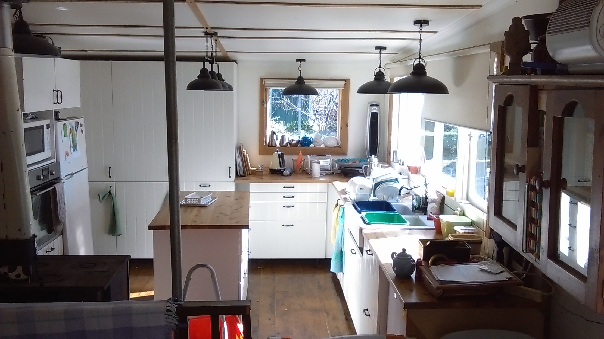
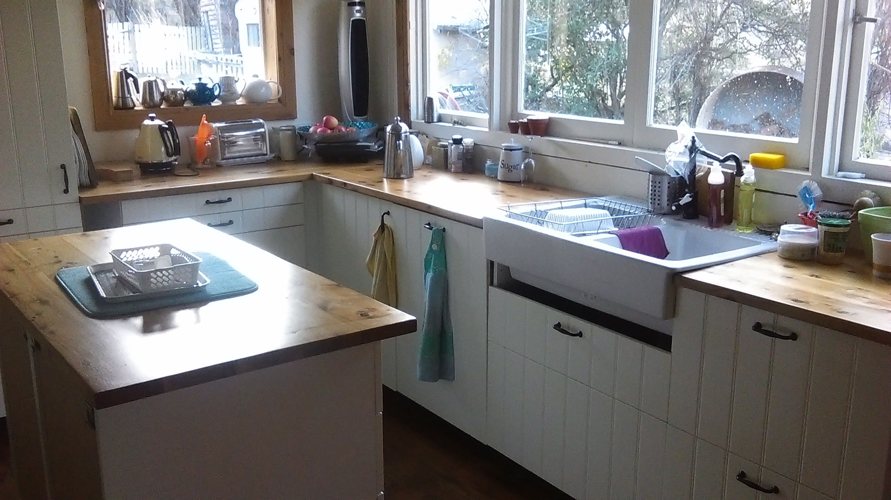

Home
News for 2018
Big frost!

Also here's where we're up to with the Kitchen:

Notice the shallow plastic tubs inside the sink which is how we deal with the sink being too deep and too hard (thus causing chipping) for doing the dishes in.

Also, take a look below here and you'll see there are now 10 years in the news archive!
________________________________________________